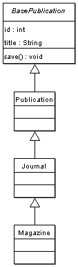

En este capitulo revisaremos algunas opciones avanzadas para el modelo de objetos de Propel.
Por defecto todas las clases base objeto se extienden de la clase propel.om.BaseObject, la cual provee un juego compartido de métodos y propiedades que los objetos usan para trazar sus estados de modificación.En lugar de eso en algunos casos usted puede querer especificar una subclase BaseObject(objeto base) para usarla ; usted puede hacer esto desde los datos de definición en XML:
<table name="book" idMethod="native" baseClass="bookstore.BookstoreComponent">
Note que usted debe usar la notación de ruta con punto(en lugar de /) cuando especifica la nueva clase base, como la clase debe ser incluida antes de que sea referenciada. La notación punto especifica una ruta relativa a una locación en el include_path de PHP. Ahora la clase generada BaseBook extendera de BookstoreComponent. Note que BookstoreComponent debe extender a BaseObject, o PHP generara un error fatal cuando usted intente usar su objeto generado o clasee peer.
require_once 'bookstore/BookstoreComponent.php';
class BaseBook extends BookstoreComponent {
Por defecto todas las clases base peer no tienen una super clase. Usted puede querer especificar una clase base peer -- ej. proveer algunas funcionalidades adicionales compartidas usadas por su modelo objeto.
Como con la clase objeto base, cambiar la clase base peer es posible en el archivo de definicion XML:
<table name="book" idMethod="native" basePeer="BookstorePeer">
como usted lo esperaba, la clase BaseBookPeer ahora extiende de BookstorePeer en lugar de BasePeer. Esta clase debe proveer todos los métodos publicos y protejidos de BasePeer.
Propel provee un soporte básico para implementar herencia orientada a onjetos (subclases) de su objeto de modelos. Hay varias opciones de implementación para mapear clases entidades y subclases para las tablas de bases de datos. Propel usa la mayoria de modelos eficientes desde SQL y perspectivas optimas de consulta: una tabla es usada para todas las subclases. Esto tiene la implementación que su tabla debe tener en todas las columnas necesitadas por la calse principal y las subclases. Propel creará subclases tropiezo, pero usted debe adicionar logica a la clase peer si requiere que la subclases sólo contenga un subjuego de la infomación -- por dedfecto todas las subclases seran popularizadas con la entera columna fila.
Usted debe definir un columna en su tabla que servirá para identificar que clase debe ser usada para representar la tabla fila; haga esto usando el atributo inheritance="single" (actualmente "single" es la única otra opción aparte de la que es por defecto, "false"). También el árbol de herencia es conocido, usted debe usar la etiqueta <inheritance> para especificar la clase heredada. Note que esta 'llave' columna debe ser una columna real en su tabla.
<table name="publication"> <column name="id" type="INTEGER" primaryKey="true"/> <column name="class_key" type="INTEGER" inheritance="single"> <inheritance key="1" class="Journal" extends="bookstore.Publication"/> <inheritance key="2" class="Magazine" extends="bookstore.Journal"/> </column> <column name="title" type="VARCHAR" size="100"/> </table>
Importante: Usted debe especificar el paquete prefijo cuando la clase pariente (extends="package.ClassName") para que esas clases puedan ser correctamente incluidas en loa lto de las definiciones de subclase; como sea, usted no puede especificar un paquete para las subclases, porque Propel sólo construye un paquete a la vez (el unico especificado por la propiedad ${propel.targetPackage} en build.properties) y es requerido que la subclase sea parte del paquete que usted esta construyendo actualmente. Concevible, las clases pariente pueden ser parte de un paquete separado.
El código anterior resultará en la creación de 2 clases base -- BasePublicationPeer y BasePublication -- y 4 subclases stub -- PublicationPeer, Publication, Journal (extiende de Publication), y Magazine (extiende de Journal).

Note que sólo una clase base por clase es creada. Si usted quiere estar seguro que su subclase sólo trabaja con un subjuegode columnas para cada fila, usted debe sobrepasar el métodoBasePublicationPeer::populateObject() para proveer popularización personalizada basado en una clase objeto. en algunos casos, como sea, el hecho que objetos de la clase correcta es retornado puede ser suficiente y de él mismo para la necesidad de su aplicación.
Si el árbol de herencia es dinámico -- o desconocido -- usted puede omitir la etiqueta <inheritance> y es asumido que la llave columna contendra un nombre clase -- usando la notación punto (ej. "bookstore.Journal", "myapp.entity.MyClassName"). También, puede sobrepasar la base de peer getOMClass() para retornar el nombre clase para usar basado en una lógica más compleja (o consulta).
Si usted desea imponer usando subclases de una entidad, usted puede declarar una tabla "abstract" en su modelo de datos XML.
<table name="publication" abstract="true">
Especificando que una tabla es abstracta generara clases objeto stub abstractas, y también requerirá que usted implemente el método getOMClass() en su clase peer stub(la ecepción sera thrown si usted no lo hace).